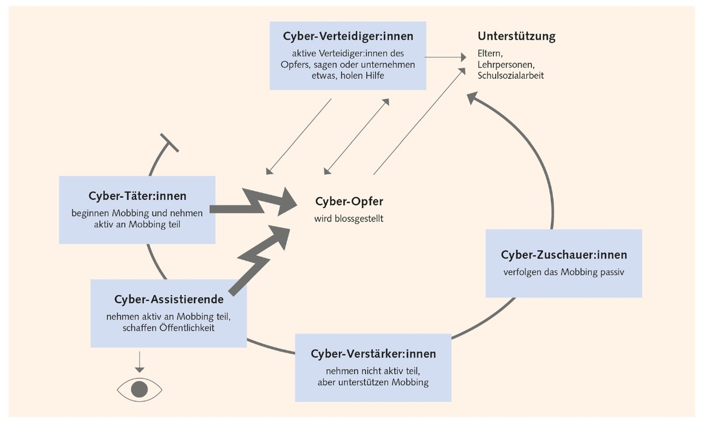
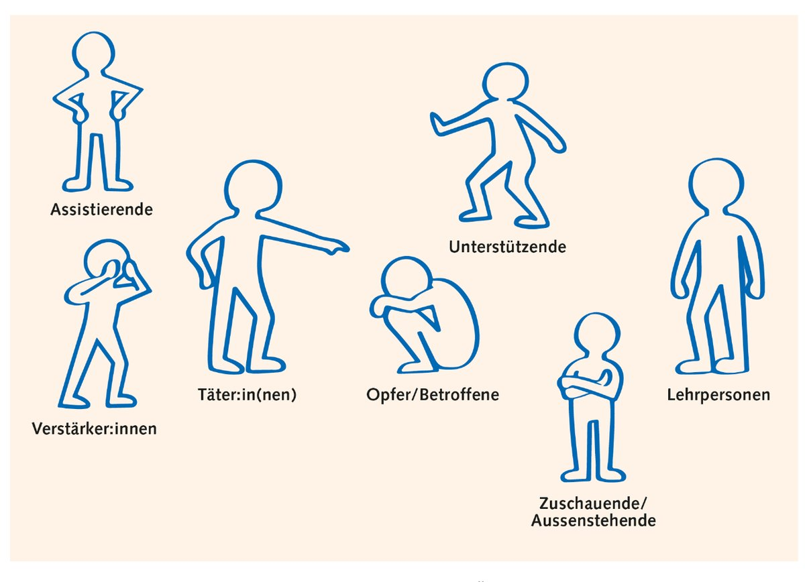
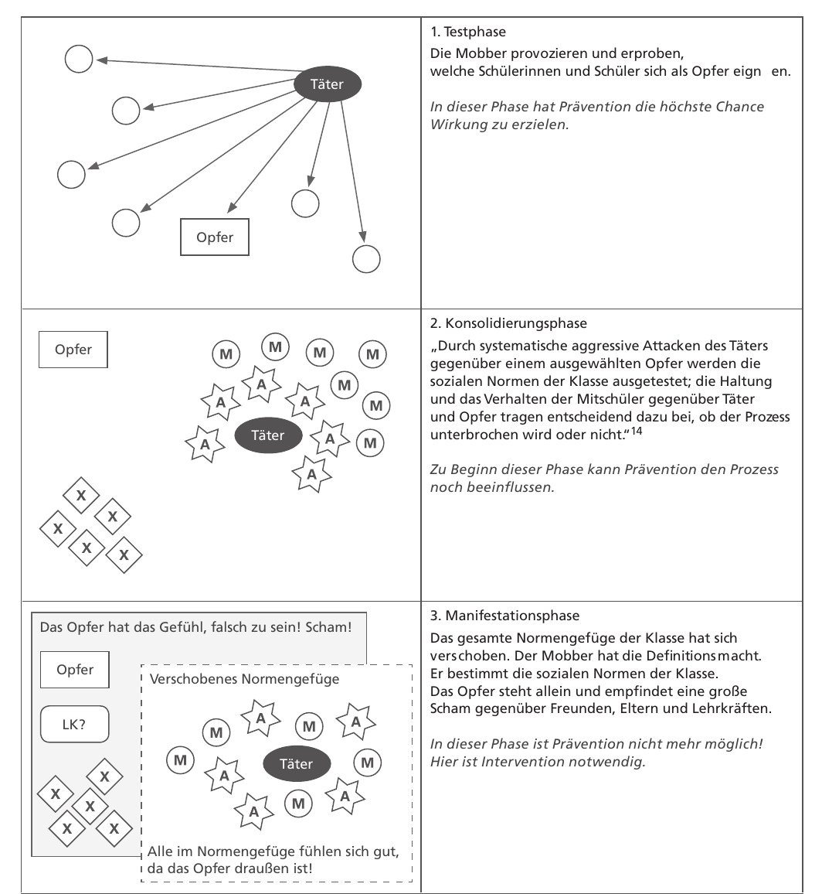
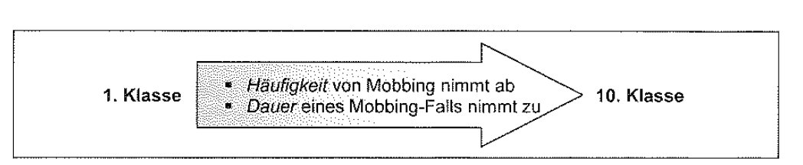
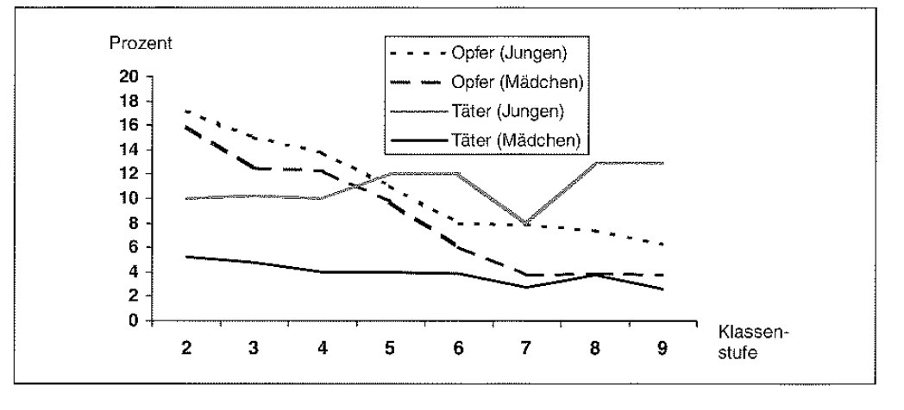
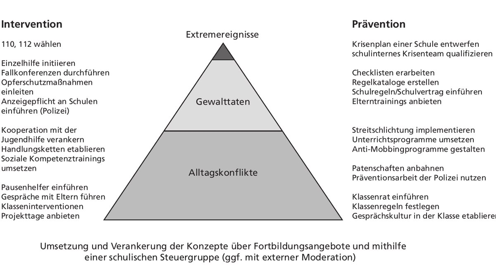

Cura è ina dispita mo ina dispita, e cura è quai mobbing? Teorias, concepts, champs da tensiun e pussaivladads d'agir per il ciclus 1, 2 e 3.
Da tge ch'i sa tracta
Conflicts tutgan tar il crescher e promovan il svilup social. Violenza e mobbing percunter ferischan, isoleschan ed impedeschan l'emprender da tuts en la classa. Persunas d'instrucziun ston pudair distinguer tge ch'ellas han davant sai e savair co prevegnir ed intervegnir confurm al stgalim.
Questa pagina scleriescha l'emprim ils noziuns e mussa pertge che mobbing è in fenomen da gruppa, co el sa sviluppa en fasas e co il cumportament social sa mida da la scolina fin al stgalim superiur. Lura preschenta ella prevenziun, programs, il No Blame Approach, intervenziun e la lavur cun ils geniturs, adina cun indicaziuns per il ciclus 1, 2 e 3. Ti pos lavurar tras ella da sura engiu u siglir cun agid da l'index.
Dieser Satz fällt oft, wenn Erwachsene von Schwierigkeiten zwischen Kindern hören. Manchmal stimmt er, manchmal ist er gefährlich falsch. Mustafa Jannan zeigt das an zwei erfundenen Beispielen (Jannan, 2010): Paul, 11, wird seit Wochen von mehreren Mitschülern beschimpft, sein Material verschwindet, und niemand in der Klasse hilft ihm. Susan, 12, streitet sich heftig mit ihrer Freundin, beide sind gleich stark, und nach einigen Tagen versöhnen sie sich. Susan erlebt einen Konflikt, Paul wird gemobbt. Diese Seite fragt: Woran erkennt mensch den Unterschied, und was braucht es je nach Alter der Kinder und Jugendlichen, um vorzubeugen und wirksam einzugreifen?
Gedankengang · drei Fragen an jede Situation
1
Was ist es? Ein Konflikt auf Augenhöhe, eine einzelne Gewalthandlung oder ein wiederholtes, systematisches Schikanieren? → Begriffe
2
Wer ist beteiligt? Nur zwei Kinder, oder eine Gruppe mit Anführenden, Mitlaufenden, Publikum und Verteidigenden? → Gruppenphänomen
3
Wie alt sind die Beteiligten? Was verstehen sie über Gefühle, Regeln und Macht, und welche Unterstützung brauchen sie deshalb? → Entwicklung und Alter
Auftrag der Schule
Gemäss HarmoS-Konkordat (Art. 3) unterstützt die Volksschule die Schülerinnen und Schüler beim Erwerb sozialer Kompetenzen. Sie lernen, mit anderen zusammenzuarbeiten, Konflikte zu lösen und mit Vielfalt umzugehen. Der Lehrplan 21 gibt den überfachlichen personalen und sozialen Kompetenzen grosses Gewicht. Daraus ergibt sich die Verantwortung, Mobbing vorzubeugen und bei Mobbinghandlungen konsequent zu handeln, gestützt auch auf die UN-Kinderrechtskonvention.Walker et al., 2026, Kap. 8.3; Alsaker, 2012, Kap. 6
Was diese Seite abdeckt
Distinguer conflict, agressiun, violenza e mobbing →
Renconuscher cybermobbing e l'integrar giuridicamain →
Mobbing als Gruppenphänomen und Prozess verstehen →
Altersunterschiede im sozialen Verhalten berücksichtigen →
Prävention auf Ebene Schule, Klasse und Kind planen →
Programme stufengerecht auswählen und intervenieren →
Zyklen:Z1 Kindergarten bis 2. Klasse · Z2 3. bis 6. Klasse · Z3 7. bis 9. Klasse
So liest du diese Seite
A klärt die Begriffe Konflikt, Aggression, Gewalt, Mobbing und Cybermobbing. B zeigt, warum Mobbing ein Gruppenphänomen ist, wie es sich in Phasen entwickelt und wie sich soziales Verhalten mit dem Alter verändert. C stellt Prävention, Programme und Interventionen vor, jeweils mit Hinweisen, für welchen Zyklus sie sich eignen. D bietet Werkzeuge, E die Spannungsfelder. In fast jedem Kapitel findest du einen Vergleich der drei Zyklen. Verwandte Themen: Manar discurs d'emprender (Gesprächsführung mit Eltern) und Emprender e digitalitad (Medienbildung).
Alle Aussagen stützen sich auf die im Literaturverzeichnis genannten Quellen und sind in eigenen Worten zusammengefasst. Hinweise mit «eigene Synthese» verbinden mehrere Quellen, besonders bei den Vergleichen der Zyklen: Die Quellen verwenden teils deutsche Klassenstufen oder Altersangaben, die ich den Schweizer Zyklen zugeordnet habe. Abbildungen mit dem Vermerk Bildzitat sind aus den Quellen übernommen und mit Fundstelle zitiert. Alle übrigen Grafiken sind eigene Darstellungen, die ich mit Hilfe von Claude.ai erstellt habe, teils in Anlehnung an die genannten Quellen. Fallbeispiele ohne Quellenangabe sind erfunden.
Überblick
Drei Zyklen, drei Entwicklungsphasen
Mobbing kommt in jeder Altersstufe vor. Darum sollen Kinder schon ab Zyklus 1 erfahren, dass Gewalt gegen Schwächere nicht akzeptiert wird (Walker et al., 2026, Kap. 8). Was Kinder über Gefühle, Regeln und Macht verstehen, verändert sich aber stark zwischen Kindergarten und Oberstufe. Die Tabelle fasst die wichtigsten Unterschiede zusammen, die auf dieser Seite vertieft werden.
Z1 Zyklus 1Kindergarten bis 2. Klasse, ca. 4 bis 8 Jahre
Z2 Zyklus 23. bis 6. Klasse, ca. 8 bis 12 Jahre
Z3 Zyklus 37. bis 9. Klasse, ca. 12 bis 15 Jahre
Soziales Verhalten
Empathie bildet sich ab etwa drei bis vier Jahren heraus und lässt sich üben. Kinder lernen schnell, dass aggressives Verhalten sich «lohnen» kann.
Perspektivenübernahme und Regelverständnis wachsen. Die Gruppe und die Meinung der Peers werden wichtiger.
Pubertät und Identitätsarbeit: Das Selbstbild gerät ins Wanken, Status in der Gruppe wird zentral.
Mobbing
Kommt bereits im Kindergarten vor. Mobbende müssen dafür nicht manipulativ sein, die wiederholte Erfahrung, dass es sich lohnt, genügt.
Häufiger als in späteren Jahren, besonders verbales Mobbing. Erste Erfahrungen mit Chats und Games.
Seltener, aber ein einzelner Fall dauert länger und ist stabiler. Jugendliche wissen genau, was sie bewirken. Cybermobbing nimmt Raum ein.
Zeuginnen und Zeugen
Jüngere Kinder reagieren oft hilflos, im zweiten Kindergartenjahr unterstützen sie Betroffene häufiger.
Viele wissen Bescheid, greifen aber selten ein, aus Angst, selbst zum Ziel zu werden.
Die meisten finden Mobbing falsch, das Publikum bleibt trotzdem oft passiv.
Schwerpunkt Schule
Klare Grenzen durch Erwachsene, Gefühle benennen, Hilfe holen üben, Patenschaften.
Klassenrat, Regeln gemeinsam erarbeiten, Zivilcourage, Einstieg in Streitschlichtung und Medienbildung.
Peer-Mediation, Medienkompetenz und Recht, schulweites Konzept, Zusammenarbeit mit Fachstellen.
Eigene Synthese nach Schubarth (2020), Alsaker (2012), Hauser et al. (2009), Jannan (2010) und Walker et al. (2026). Die Belege stehen in den einzelnen Kapiteln.
Vorsicht mit Altersnormen
Die Zyklen sind keine Entwicklungsstufen. Innerhalb einer Klasse liegen oft mehrere Jahre Entwicklungsunterschied, und Mädchen und Jungen zeigen Aggression teils in unterschiedlicher Form. Die Tabelle beschreibt Tendenzen, keine Diagnosen (eigene Synthese).
Überblick
Wie die Konzepte zusammenhängen
Von links nach rechts: vom alltäglichen Konflikt über Gewalt bis zum Mobbing. Darunter, was Mobbing aufrechterhält, und rechts, was die Schule tun kann. Klicke auf einen Begriff, um direkt dorthin zu springen.
Eigene Darstellung, angelehnt an die Begriffsordnung bei Schubarth (2020, Abb. 2) und an die Gliederung von Walker et al. (2026).
ABegriffe klärenKonflikt, Aggression, Gewalt, Mobbing und Cybermobbing auseinanderhalten
A · Konflikt
Konflikt oder Mobbing?
Konflikte gehören zum Alltag von Kindern und Jugendlichen und fördern ihre emotionale und soziale Entwicklung. Wer streitet, lernt, den eigenen Standpunkt zu vertreten, nachzugeben, Kompromisse zu schliessen und gemeinsam Lösungen zu suchen. Mobbing dagegen behindert die sozial-emotionale Entwicklung, und zwar bei Gemobbten wie bei Mobbenden (Walker et al., 2026, Kap. 8.1).
Konflikt
Mobbing
Kräfteverhältnis
gleichberechtigt, etwa gleich stark
Ungleichgewicht: Die betroffene Person ist unterlegen
Da tge ch'i sa tracta
meist ein konkreter Inhalt (ein Gegenstand, ein Vorfall)
Machtdemonstration, oft ohne nachvollziehbaren Grund, Ziel ist häufig der Ausschluss
Verlauf
wechselseitig, endet mit Lösung, Kompromiss oder Versöhnung
einseitig, wiederholt und systematisch über Wochen oder Monate
Ausweg
beide können handeln
die betroffene Person kann sich nicht aus eigener Kraft befreien
Pädagogische Antwort
begleiten, Konfliktlösung üben
Erwachsene müssen eingreifen und die Gruppe einbeziehen
Eigene Darstellung nach Walker et al. (2026, Kap. 8.1) und Jannan (2010).
Was (noch) kein Mobbing ist
Von Mobbing abzugrenzen sind Tobspiele (spielerisches Kräftemessen), Necken (freundschaftlich gemeinte Interaktionen) und geringfügige Belästigungen. Auch kein Mobbing liegt vor, wenn Kinder sich immer wieder um eine Sache streiten oder wenn ein Kind schwer Anschluss findet und zu wenig einbezogen wird. Solche Situationen brauchen trotzdem Aufmerksamkeit.Schubarth, 2020, S. 37; Walker et al., 2026, Kap. 8.1
Wo fängt Gewalt an?
Kinder und Jugendliche haben im Vergleich zu Erwachsenen oft ein enges Gewaltverständnis: Für viele ist erst Gewalt, was sichtbar körperlich verletzt. Psychische und verbale Gewalt oder Handgreiflichkeiten gelten eher als normaler Umgang oder als «Spasskampf». Mobbing wird besonders von Jungen oft nicht als Gewalt wahrgenommen, Mädchen sind sensibler.Schubarth, 2020, S. 37
Im Blick auf die Zyklen
Zyklus 1Tobspiel oder Übergriff?
Raufen und Kräftemessen sind im Kindergarten häufig. Ob ein Spiel noch einvernehmlich ist, erkennt mensch daran, ob beide Kinder freiwillig mitmachen, die Rollen wechseln und lachen. Kinder können das selbst noch kaum begründen, die Erwachsenen benennen es für sie (eigene Synthese nach Schubarth, 2020).
Zyklus 2Wörter werden Waffen
Verbales Mobbing ist die häufigste Form (Jannan, 2010). Weil Kinder Beleidigungen und Ausgrenzung oft nicht als Gewalt sehen, lohnt es sich, gemeinsam zu klären, was verletzt, und Regeln dazu zu formulieren (eigene Synthese nach Schubarth, 2020).
Zyklus 3«Ist doch nur Spass»
Jugendliche relativieren verbale Angriffe häufig als Spass. Sexuelle Übergriffe, etwa das Verbreiten von Nacktbildern, sind kein Mobbing, sondern sexuelle Belästigung, die strafrechtlich verfolgt wird und ein anderes Vorgehen braucht (Walker et al., 2026, Kap. 8.4).
Kurz geprüft: Konflikt, Gewalt oder Mobbing?
Ordne die Situationen zu. Manche liegen an der Grenze, die Auflösung zeigt den Schwerpunkt.
Zwei Kindergartenkinder wollen beide das gleiche Dreirad. Es gibt Tränen, die Lehrperson hilft ihnen, sich abzuwechseln.
Konflikt: gleich starke Kinder, ein konkreter Gegenstand, eine Lösung ist möglich.
Seit Wochen setzt sich in der 4. Klasse niemand neben Lara. Wenn sie etwas sagt, kichern drei Mädchen, die anderen schauen weg.
Mobbing: wiederholt, über längere Zeit, gegen eine Person, mit Publikum. Ausgrenzung ist eine nonverbale Form.
Nach einem Fussballspiel schlägt ein Junge der 8. Klasse einen Gegenspieler, den er sonst kaum kennt. Es ist der erste Vorfall.
Gewalt: eine einzelne körperliche Schädigung, aber ohne Wiederholung und Systematik noch kein Mobbing.
Zwei Freundinnen der 6. Klasse streiten sich heftig über ein Geheimnis, beide schreiben sich verletzende Nachrichten. Nach drei Tagen versöhnen sie sich.
Konflikt: wechselseitig und auf Augenhöhe, wie bei Susan im Beispiel von Jannan (2010). Die Nachrichten verdienen trotzdem ein Gespräch über den Umgang im Chat.
In einer Gruppe der 9. Klasse kursiert ein bearbeitetes Bild eines Mitschülers mit Spottnamen. Jede Woche kommt ein neues dazu.
(Cyber-)Mobbing: wiederholt und systematisch, mit grossem Publikum. Vgl. das Beispiel eines Gruppenchats bei Walker et al. (2026, Kap. 8.5).
0 von 5 richtig
A · Aggression und Gewalt
Aggression, Gewalt und Mobbing ordnen
Wilfried Schubarth ordnet die Begriffe ineinander: Aggression ist der weiteste Begriff, Gewalt eine Teilmenge davon, Mobbing wiederum eine besondere Form von Gewalt. Jedes Mobbing ist also Gewalt, aber nicht jede Gewalt ist Mobbing (Schubarth, 2020, S. 36 f.).
Eigene Darstellung nach Schubarth (2020), Abb. 2, S. 36: Einordnung der Begriffe (dort nach Scheithauer u. a., 2003).
Formen von Gewalt in der Schule
physisch: schädigen und verletzen durch körperliche Kraft
digital: Cybermobbing, Filmen und Verbreiten von Angriffen
institutionell: Gewalt, die von Strukturen der Schule ausgeht
nach Schubarth, 2020, S. 37 f., Tab. 1
Warum die Unterscheidung zählt
Wer Mobbing mit anderen Gewaltformen verwechselt, reagiert leicht falsch: Lehrpersonen, Eltern und Kinder schwanken dann zwischen Wut, Hilflosigkeit, Aktivismus und Resignation (Jannan, 2010). Eine Rauferei verlangt eine andere Antwort als ein seit Wochen laufender Ausschluss.
Erklärungsansätze und was sie für die Prävention bedeuten
Schubarth stellt mehrere Theorien nebeneinander. Jede erklärt einen Teil und legt andere Massnahmen nahe:
Entwicklungspsychologisch: Aggression ist eingebettet in die kognitive, moralische und psychosoziale Entwicklung (Piaget, Kohlberg, Erikson). → gezielt Perspektivenübernahme, Regeleinsicht und gewaltlose Konfliktlösung fördern.
Lerntheoretisch: Aggressives Verhalten wird am Modell gelernt und durch Erfolg verstärkt. → Erwachsene als Vorbilder, aggressives Verhalten nicht belohnen.
Frustration und Kognition: Aggression folgt auf Frustration und auf die Deutung einer Situation als feindselig. → Frustrationen abbauen, Deutungen besprechen.
Etikettierung: Wer als «Schläger» abgestempelt wird, übernimmt die Rolle. → Person und Verhalten trennen.
Sozialökologisch: Gewalt entsteht im Zusammenspiel von Person, Gruppe, Schule und Umfeld. → langfristige, umfassende Konzepte statt Einzelmassnahmen.
verdichtet nach Schubarth, 2020, S. 45–73, Tab. 2
A · Mobbing
Was Mobbing ausmacht
Nach Dan Olweus wird eine Schülerin oder ein Schüler gemobbt, wenn sie oder er wiederholt und über längere Zeit den negativen Handlungen einer oder mehrerer anderer ausgesetzt ist. «Mobbing» und «Bullying» werden heute meist gleichbedeutend verwendet (Schubarth, 2020, S. 36 f., nach Olweus, 1995).
Die Merkmale gelten gemeinsam
1
Kräfteungleichgewicht: Die betroffene Person ist unterlegen, körperlich, zahlenmässig oder sozial.
2
Häufigkeit: Die Angriffe sind systematisch, etwa wöchentlich.
3
Dauer: Sie ziehen sich über längere Zeit hin, Wochen bis Monate.
4
Kein Ausweg: Die betroffene Person kann die Situation nicht aus eigener Kraft beenden.
5
Ausschluss: Ziel ist oft, jemanden aus der Klassengemeinschaft zu drängen.
Jannan, 2010 (Merkmale 1–4); Walker et al., 2026, Kap. 8.1 (alle fünf, dort Dauer «3–4 Monate oder länger»)
Woran mensch Mobbing erkennt
Hinter dem Rücken einer Person wird getuschelt, es werden Gerüchte gestreut, Schwächen werden verspottet. Sie wird im Unterricht unterbrochen, ausgelacht, bekommt die unbeliebten Aufgaben, Hilfe wird ihr verweigert, sie wird wie Luft behandelt und auch ausserhalb der Schule geschnitten. Dazu kommen Sachbeschädigung (Znüni verstecken, Velo beschädigen), Drohungen und Demütigungen.Schubarth, 2020, S. 136; Walker et al., 2026, Kap. 8.4.1
Lieber «Betroffene» als «Opfer»
Der Begriff «Opfer» verbindet sich mit Handlungsunfähigkeit. Für die psychische Gesundheit ist wichtig, dass sich Betroffene nicht dauerhaft als Opfer erleben, sondern handlungsfähig bleiben oder werden. Walker et al. empfehlen deshalb in Gesprächen die Begriffe «Gemobbte» oder «Betroffene». Diese Seite folgt dem, ausser wo eine Quelle wörtlich zitiert wird.Walker et al., 2026, Kap. 8.1
Folgen
Mobbing hat Folgen für alle: Gemobbte können Angst vor der Schule, körperliche Beschwerden, sinkende Leistungen, Isolation und depressive Verstimmungen entwickeln. Mobbende zeigen ein erhöhtes Risiko für spätere Delinquenz und für Ablehnung durch Gleichaltrige. Für die ganze Klasse sinken Klassenklima, Vertrauen und Lernleistung. Ursache und Wirkung lassen sich oft nicht klar trennen.Walker et al., 2026, Kap. 8.1, Tabelle «Folgen von Mobbing»
A · Cybermobbing
Cybermobbing: Mobbing ohne Rückzugsort
Cybermobbing ist Mobbing über digitale Kanäle: soziale Netzwerke, Videoportale, Messenger und Games mit ihren Chats. Während analoges Mobbing meist an einen Ort gebunden ist, gibt es online oft keinen Rückzugsort mehr. Wer online gemobbt wird, wird meist auch offline gemobbt, und umgekehrt. Eine Analyse muss darum immer beide Ebenen prüfen (Walker et al., 2026, Kap. 8.5).

Bildzitat · Walker, Betschart & Broger (2026), SchoolMatters, Kap. 8.5, S. 27: Cybermobbing-Zyklus, in Anlehnung an Berger (2016) und Sticca et al. (2013).
Was Cybermobbing verschärft
Anonymität: Falsche Profile senken die Hemmschwelle.
Verfügbarkeit: Inhalte werden kopiert, geteilt und lassen sich kaum ganz löschen.
Erreichbarkeit: Angriffe sind rund um die Uhr möglich und reichen bis ins Kinderzimmer.
Gleich bleibt: Auch Cybermobbing ist ein Gruppenphänomen mit denselben Rollen.Walker et al., 2026, Kap. 8.5
Formen
Gerüchte verbreiten, aus Chatgruppen oder Games ausschliessen, beleidigen, schikanieren, unter falscher Identität auftreten, blossstellen, Vertrauen missbrauchen (intime Details entlocken und verbreiten), bedrohen.Walker et al., 2026, Kap. 8.5
Tipps für Betroffene
Nicht online zurückschlagen, das provoziert Eskalation.
Hilfe holen: Eltern, Lehrperson, Schulsozialarbeit, Freundinnen und Freunde oder die Beratung 147 von Pro Juventute (Telefon, SMS, Chat, rund um die Uhr).
Blockieren, melden, Beweise sichern (Screenshots), danach soweit möglich löschen. Verbotene Inhalte wie illegale Pornografie nicht speichern, sondern über das Meldeformular von fedpol melden.
Klärende Gespräche helfen oft. Betroffene und Mobbende sollen dabei nicht gegenübergestellt werden.
Walker et al., 2026, Kap. 8.5
Recht: Wann die Polizei?
Cybermobbing ist in der Schweiz wie Mobbing kein eigener Straftatbestand. Einzelne Handlungen können aber strafbar sein, etwa üble Nachrede (Art. 173 StGB), Verleumdung (Art. 174), Beschimpfung (Art. 177), Drohung (Art. 180), Nötigung (Art. 181), Erpressung (Art. 156) oder unbefugte Bild- und Tonaufnahmen (Art. 179quater). Die Polizei kann Daten sichern, an die die Schule nicht gelangt. Eine Anzeige lässt sich aber je nach Delikt nicht zurückziehen und kann die Lage verschärfen. Bei akuter Gefährdung, etwa einer Drohung, muss sofort gehandelt werden.Walker et al., 2026, Kap. 8.5 Ein neuer Artikel «Herabsetzung und Ausgrenzung» (Art. 177bis StGB) war im Frühling 2026 in der Vernehmlassung (Netzwoche, 29.5.2026). Prüfe den aktuellen Stand.
Im Blick auf die Zyklen
Zyklus 1Grundlagen legen
Cybermobbing ist selten ein Thema, die Grundlagen aber schon: Gefühle erkennen, «Stopp» sagen, Hilfe bei Erwachsenen holen. Diese Kompetenzen tragen später auch online (eigene Synthese).
Zyklus 2Erste Chats und Games
Viele Kinder kommunizieren in Games wie Minecraft oder Roblox und in ersten Klassenchats. Ein Beispiel bei Walker et al. zeigt, wie ein Mitschüler, der in der Schule freundlich tat, im Online-Spiel droht. Jetzt lohnt es sich, Datenschutz, Erkennen von Cybermobbing und Anlaufstellen zu thematisieren (eigene Zuordnung zum Zyklus; Inhalte und Beispiele nach Walker et al., 2026, Kap. 8.5).
Zyklus 3Öffentlichkeit, Sexting, Recht
Mit dem eigenen Smartphone wächst die Reichweite. Themen sind Blossstellung in Gruppenchats, Hate Speech, Sexting und die Strafbarkeit einzelner Handlungen. Fallbearbeitung und Diskussion in der Klasse sind hier besonders geeignet (Walker et al., 2026, Kap. 8.5).
Die Zuordnung zu den Zyklen ist eine Empfehlung von mir, nach Zielpublikum der Sendungen. Bitte vor dem Einsatz selbst anschauen.
BVerstehenWarum Mobbing entsteht, wer daran beteiligt ist und wie es sich mit dem Alter verändert
B · Gruppenphänomen
Mobbing als Gruppenphänomen
Mobbing betrifft nicht nur Mobbende und Gemobbte. Es lebt von der Gruppendynamik, und alle in der Klasse nehmen eine Rolle ein, auch wer nur zuschaut. In über 85 Prozent der Mobbingfälle gibt es Zuschauende. Mobbing braucht also ein Publikum (Walker et al., 2026, Kap. 8.1).

Bildzitat · Walker et al. (2026), SchoolMatters, Kap. 8.1, S. 8: Gruppendynamik bei Mobbingprozessen (Quelle dort: ÖZEPS/goldmädchen/Nora Novak).
Die Rollen nach Salmivalli
Mobbende ergreifen die Initiative und führen.
Assistierende machen aktiv mit, würden aber selbst nie beginnen.
Verstärkende schauen zu, lachen, feuern an.
Verteidigende stellen sich auf die Seite der Betroffenen.
Aussenstehende erleben die Angriffe mit, halten sich aber heraus.
In einer finnischen Studie mit 12- bis 13-Jährigen waren rund 8 % Mobbende, 7 % Assistierende, 19 % Verstärkende, 17 % Verteidigende, 24 % Aussenstehende und 12 % Betroffene.Walker et al., 2026, Kap. 8.1; Hauser et al., 2009, nach Salmivalli et al., 1996
Warum Zuschauende schweigen
Zuschauende fürchten, selbst zur Zielscheibe zu werden. Sie fühlen sich weniger verantwortlich, je mehr andere auch zusehen (Verantwortungsdiffusion), und lernen am Modell, dass Wegschauen normal ist. Ihre Passivität signalisiert den Mobbenden Zustimmung. Ihnen selbst geht es in Klassen mit Mobbing schlechter als Gleichaltrigen ohne Mobbing.Walker et al., 2026, Kap. 8.1; Hauser et al., 2009
Studie: Kindergartenkinder als Zeugen
Debora Hauser, Eveline Gutzwiller-Helfenfinger und Françoise Alsaker befragten 968 Kinder in 59 Berner Kindergärten (4,8 bis 7,7 Jahre). Sie unterschieden drei Reaktionen von Zeuginnen und Zeugen: Betroffene unterstützen, Mobbende unterstützen und hilflos reagieren. Kinder im zweiten Kindergartenjahr unterstützten Betroffene signifikant häufiger und reagierten seltener hilflos als Kinder im ersten Jahr. Mädchen unterstützten Betroffene häufiger, Jungen eher die Mobbenden. In Gruppen mit aggressivem Klima unterstützten mehr Kinder die Mobbenden, in Gruppen mit konstruktivem Konfliktverhalten die Betroffenen.Hauser et al., 2009
Erwachsene sehen wenig
Beobachtungsstudien, die Hauser et al. zitieren, zeigen: Gleichaltrige sind bei den meisten Vorfällen anwesend, greifen aber nur selten ein, Lehrpersonen noch seltener, und oft bemerken sie den Vorfall gar nicht. Wenn Kinder eingreifen, wird das Mobbing in mehr als der Hälfte der Fälle gestoppt. Hier liegt das grösste Potenzial der Prävention.Hauser et al., 2009, nach Craig & Pepler sowie Hawkins, Pepler & Craig, 2001
Im Blick auf die Zyklen
Zyklus 1Hilflosigkeit in Handeln verwandeln
Schon Kindergartenkinder nehmen dieselben Rollen ein wie ältere Kinder. Die jüngeren wissen aber oft nicht, was sie tun sollen. Hauser et al. schlagen ein Götti- oder Patensystem vor: Ein älteres Kind steht einem jüngeren zur Seite. Konkrete Handlungsmöglichkeiten wie «Stopp sagen» und «Hilfe holen» sollten geübt werden (Hauser et al., 2009).
Zyklus 2Zivilcourage aufbauen
Die Gruppe und die Meinung der anderen gewinnen an Gewicht. Wenn sich die Klasse schon bei ersten Angriffen klar gegen Mobbing stellt, kann Mobbing verhindert werden. Empathie, Perspektivenwechsel und Zivilcourage lassen sich gezielt trainieren (Walker et al., 2026, Kap. 8.2.2).
Zyklus 3Haltung ist da, Handeln fehlt
An Schweizer Schulen begrüssen 87 % der 15-Jährigen, wenn sich jemand für Gemobbte einsetzt, und 86 % finden Mitmachen falsch. Trotzdem bleibt das Publikum oft passiv. Hier gilt es, die vorhandene Haltung in Handeln zu übersetzen und das Schweigen als Teil des Problems zu besprechen (Walker et al., 2026, Kap. 8.1, nach PISA 2018; eigene Folgerung).
B · Gewinn
Warum Mobbing sich «lohnt»
Françoise Alsaker betrachtet Mobbing sozialökologisch: Es entsteht im Zusammenspiel von Kindern, Gruppe, Lehrpersonen, Schule und Familie. Ein Kernsatz: Mobbing lohnt sich für die Mobbenden. Sie erleben Macht, Kontrolle und Kompetenz, bekommen Anerkennung von Gleichgesinnten, gehen kaum ein Risiko ein und bringen «Spannung» in einen als langweilig erlebten Schulalltag (Alsaker, 2012, Kap. 6).
Die Gruppe
Aggressive Kinder suchen und finden einander, bereits im Kindergartenalter. Mobbing wird selten allein ausgeübt, sondern mit Assistierenden, die sich gegenseitig bestärken. Würden die Mitläufenden früh merken, dass Mobbing keine Zuwendung bringt, verlöre es schnell an Reiz.Alsaker, 2012, Kap. 6.1–6.2
Die Erwachsenen
Wo Kinder klare Haltungen und Grenzen von Erwachsenen erleben, gibt es weniger Mobbing. Ruppigen Umgang als «heute normal» hinzunehmen, nennt Alsaker eine Kapitulation. Es braucht beides: «Halt sagen» und «Halt geben», mit Erwachsenen als Vorbild.Alsaker, 2012, Kap. 6
Die Familie
Wenn ein Kind zu Hause mit aggressivem Verhalten durchkommt, lernt es, dass es sich lohnt (positive und negative Verstärkung nach Patterson). Dieses «Nötigungsverhalten» kann es in die Peergruppe übertragen. Überbehütung kann bei Gemobbten Ursache oder Folge sein. Eltern brauchen deshalb Unterstützung, nicht Schuldzuweisung.Alsaker, 2012, Kap. 6
Fallbeispiel: Fabian, 6
Eine Stellvertreterin kommt in einen Kindergarten. Fabian erklärt ihr, er bestimme hier, was gespielt werde. Sie bleibt ruhig und klar: Solange sie hier sei, bestimme sie. Fabian versucht es nochmals, dann macht er mit. Am Abend fragt er, ob sie wiederkomme. Alsaker zeigt damit, wie belohnend Macht schon für Sechsjährige ist und wie viel Sicherheit eine ruhige, bestimmte Grenze gibt.Alsaker, 2012, Kap. 6, gekürzt nacherzählt
Vom Kind zum Jugendlichen
Alsaker hält fest: Jugendliche wissen sehr wohl, was sie mit Mobbing bewirken. Jüngere Kinder dagegen müssen nicht manipulativ sein, um andere zu mobben. Es genügt, dass sie wiederholt erleben, dass sich ihr Verhalten lohnt. Für die Praxis heisst das: In Z1 zählt vor allem, dass aggressives Verhalten sofort und konsequent keinen Gewinn bringt. In Z3 braucht es zusätzlich die Auseinandersetzung mit Verantwortung und Absicht (Alsaker, 2012, Kap. 6.2; eigene Folgerung).
B · Prozess
Der Mobbingprozess in drei Phasen
Mobbing entwickelt sich meist in einem längeren Prozess, häufig unbemerkt von den Lehrpersonen. Je schutzloser sich die Kinder fühlen, desto grösser die Gefahr der Eskalation. Auf jeder Stufe gibt es andere Handlungsmöglichkeiten (Schubarth, 2020, S. 136 f.).

Bildzitat · Schubarth (2020), Gewalt und Mobbing an Schulen, Tab. 9, S. 137: Mobbingprozess und Interventionsmöglichkeiten (dort nach Behörde für Schule und Berufsbildung Hamburg, 2014).
1
Testphase: Die Mobbenden provozieren verschiedene Kinder und testen, wer sich als Ziel eignet. Hier wirkt Prävention am stärksten.
2
Konsolidierungsphase: Die Angriffe richten sich systematisch gegen ein Kind. Nun entscheidet das Verhalten der Mitschülerinnen und Mitschüler, ob der Prozess gestoppt wird. Zu Beginn kann Prävention noch wirken.
3
Manifestationsphase: Die Normen der Klasse haben sich verschoben, die Mobbenden haben die Definitionsmacht. Alle anderen fühlen sich gut, weil das betroffene Kind «draussen» ist. Es schämt sich und steht allein. Prävention ist nicht mehr möglich, es braucht Intervention.
nach Schubarth, 2020, S. 137
Folgerung
Wer Mobbing erst bemerkt, wenn Betroffene sich melden, steht oft schon in Phase 3. Gemobbte vertrauen sich häufig sehr spät an, aus Angst vor Verschlimmerung, aus Scham oder weil das Vertrauen zur Lehrperson fehlt (Walker et al., 2026, Kap. 8.3). Aufmerksames Beobachten in Phase 1 und 2 ist deshalb entscheidend.
B · Entwicklung und Alter
Wie sich Konflikte, Gewalt und Mobbing mit dem Alter verändern
Aggressives Verhalten ist eingebettet in die gesamte kognitive, moralische und psychosoziale Entwicklung. Kinder und Jugendliche müssen lernen, Regeln einzusehen, eigene moralische Vorstellungen zu entwickeln, Gefühle auszudrücken, sich in andere hineinzuversetzen und Konflikte gewaltlos zu lösen. Das können sie nicht allein: Sie brauchen Erwachsene, die sich mit ihnen auseinandersetzen, sie fördern und ihnen Grenzen setzen. Dieser Lernprozess beginnt sehr früh (Schubarth, 2020, S. 45 f.).

Bildzitat · Jannan (2010), Das Mobbing-Elternheft, Abb. 5, S. 11: Je älter die Kinder, desto seltener, aber desto stabiler wird ein Mobbing-Fall.

Bildzitat · Jannan (2010), Abb. 6, S. 11: So häufig sind Jungen bzw. Mädchen Täter oder Opfer in verschiedenen Klassenstufen (deutsche Klassenstufen 2 bis 9).
Was die Grafiken zeigen
Mobbing ist in den ersten Schuljahren am häufigsten. Mit zunehmendem Alter nimmt die Zahl der Betroffenen deutlich ab, ein einzelner Fall dauert aber länger und ist schwerer aufzulösen. Der Anteil mobbender Jungen bleibt über die Jahre etwa gleich, der Anteil mobbender Mädchen sinkt.Jannan, 2010, S. 10 f.
Schweizer Zahlen
Laut HBSC-Studie 2018 wurden 6,3 % der 11- bis 15-Jährigen mindestens zweimal im Monat gemobbt. Ältere berichteten seltener davon als Jüngere. In PISA 2018 wies die Schweiz im Ländervergleich die höchste Rate an ausgrenzendem Verhalten auf: Rund 13 % der 15-Jährigen gaben an, dass mensch sich mehrmals im Monat über sie lustig machte.Walker et al., 2026, Kap. 8.1
Jungen und Mädchen
Jungen sind häufiger Mobbende und Betroffene, rund 80 % der Fälle spielen sich innerhalb desselben Geschlechts ab. Mädchen mobben eher indirekt (Gerüchte, Freundschaften untergraben), Jungen offener. In der HBSC-Studie berichteten Mädchen dagegen etwas häufiger, gemobbt zu werden (6,9 % gegenüber 5,8 %). Die Befunde hängen also davon ab, welche Formen gezählt werden.Jannan, 2010; Walker et al., 2026, Kap. 8.1; eigene Folgerung
Soziales Verhalten und Mobbing in den drei Zyklen
Zyklus 1 · ca. 4 bis 8 JahreEmpathie lernen, Grenzen erfahren
Empathie bildet sich ab etwa drei bis vier Jahren heraus und kann gezielt geübt werden (Schubarth, 2020, S. 149).
Das moralische Urteil ist noch stark an Autoritäten und Regeln von aussen gebunden (Heteronomie nach Piaget; Schubarth, 2020, S. 45).
Mobbing gibt es schon hier, oft körperlich und offen. Kinder brauchen dafür keine Absicht im Sinne von Manipulation (Alsaker, 2012).
Prosoziales Verhalten nimmt vom ersten zum zweiten Kindergartenjahr zu (Hauser et al., 2009).
Folgerung: Erwachsene reagieren sofort, klar und ruhig, benennen Gefühle und üben Hilfe holen. Programme wirken in diesem Alter am stärksten (Schubarth, 2020, S. 218).
Zyklus 2 · ca. 8 bis 12 JahreRegeln verstehen, Gruppe wird wichtig
Perspektivenübernahme und die Einsicht in die Notwendigkeit von Regeln entwickeln sich weiter (Schubarth, 2020, S. 45 f.).
Mobbing ist noch häufig, verbale und indirekte Formen nehmen Raum ein (Jannan, 2010).
Die Meinung der Peers wird zentral. Kinder fürchten, selbst Ziel zu werden, wenn sie helfen (Walker et al., 2026).
Sensibilisierung für konstruktive Konfliktbearbeitung wird besonders für die 5. und 6. Klasse empfohlen (Schubarth, 2020, S. 146).
Folgerung: Regeln gemeinsam erarbeiten, Klassenrat, Zivilcourage üben, Kinder als Streitschlichtende vorbereiten (eigene Synthese).
Zyklus 3 · ca. 12 bis 15 JahreIdentität, Status, Autonomie
Mit der Pubertät gerät das Selbstbild ins Wanken, Jugendliche bearbeiten ihre soziale Identität neu (Erikson; Schubarth, 2020, S. 46).
Es geht um autonome Moral im Umgang mit Normen (Kohlberg; Schubarth, 2020, S. 45).
Mobbing ist seltener, aber stabiler. Jugendliche wissen genau, was sie damit bewirken (Jannan, 2010; Alsaker, 2012).
Die Beziehung zur Klassenlehrperson ist weniger eng, bleibt aber wichtig (Walker et al., 2026, Kap. 8.3).
Folgerung: Jugendliche als Verantwortliche einbeziehen (Peer-Mediation, Unterstützungsgruppe), Medien und Recht thematisieren, früh Fachstellen beiziehen (eigene Synthese).
Was prosoziales Verhalten fördert, in jedem Alter
Ein emotional zugewandtes Erziehungsverhalten, in dem eigene und fremde Gefühle akzeptiert werden, vernünftiges Argumentieren, Lob für erwünschtes Verhalten, Lernen am Modell und die Teilnahme an prosozialen Aktivitäten. In der Schule wirken kooperatives Lernen und Diskussionen über soziale Dilemmata: Lernende erkennen Notsituationen anderer dann besser und bewerten Folgen differenzierter (Schubarth, 2020, S. 46). Was sich mit dem Alter ändert, ist nicht das Ob, sondern die Form: von angeleiteten Gefühlsübungen in Z1 bis zu offenen Dilemma-Diskussionen in Z3 (eigene Synthese).
B · Risiko und Schutz
Risiko- und Schutzfaktoren
Mobbing lässt sich nicht auf eine einfache Ursache zurückführen. Es gibt kein typisches Profil von Gemobbten oder Mobbenden. Bestimmte Faktoren erhöhen aber die Wahrscheinlichkeit, andere schützen (Walker et al., 2026, Kap. 8.2).
Was das Risiko erhöht
bei Gemobbten: ängstlich, körperlich schwächer, wenig Freundschaften; schüchterne Kinder, die sich zurückziehen. Der Bruch eines ungeschriebenen Klassen-Kodex kann Auslöser sein. Die Merkmale erhöhen nur das Risiko, sie sind nie die Schuld der Betroffenen.
bei Mobbenden: Wunsch nach Macht und Status, Sündenbocksuche, Langeweile, Neid, Rache, Fremdenfeindlichkeit, Abwertung von LGBT+-Personen, eigene Mobbingerfahrungen.
diskriminierender Hintergrund: Herkunft, Sprache, Aussehen, Geschlechterstereotype, starre Rollen wie «Klassenclown» oder «Sündenbock».
strukturell: Klima von Misstrauen und Machtkämpfen, fehlende oder nicht durchgesetzte Regeln, Schuldzuweisung statt Lösungsorientierung.
Walker et al., 2026, Kap. 8.2.1; Jannan, 2010
Was schützt
die Klasse selbst: Wenn sich Kinder schon bei ersten Angriffen klar dagegen stellen, hat Mobbing keine Chance.
Empathie und Mitgefühl: Werden mobbende Haltungen von empathischen Mitschülerinnen und Mitschülern zurückgewiesen, bleibt die Belohnung aus.
Freundschaften: Beste Freundinnen und Freunde schützen gerade schüchterne Kinder.
protektives Schulklima: klare Haltung, verbindliche Regeln für alle, Respekt und Vertrauen, Nulltoleranz gegenüber Mobbing.
Beziehungen: tragfähige Beziehungen in Klasse und Schule.
Walker et al., 2026, Kap. 8.2.2
Kaum Einfluss
Entgegen verbreiteter Meinung beeinflussen Herkunft der Kinder, Stadt oder Land und Klassengrösse die Häufigkeit von Mobbing kaum (Jannan, 2010, S. 11). Entscheidender sind Klima, Haltung und Regeln, also das, was eine Schule selbst gestalten kann (eigene Folgerung).
CHandelnVorbeugen, stufengerecht Programme wählen, eingreifen und mit Eltern zusammenarbeiten
C · Prävention
Prävention auf drei Ebenen
Prävention umfasst alle Massnahmen, die künftige Gewalt verhindern oder mindern. Intervention ist das unmittelbare Eingreifen bei bestehender Gewalt (Schubarth, 2020, S. 122). Je besser Prävention, Früherkennung und Frühintervention greifen, desto seltener braucht es aufwändige Interventionen (Walker et al., 2026, Kap. 8).
Primärprävention
für alle, bevor etwas passiert: Gewaltlosigkeit als Erziehungsziel, Selbstwert und Vertrauen stärken, prosoziale Haltungen, Kommunikations- und Konfliktkompetenzen, Schulklima und Lernkultur, Zusammenarbeit mit Eltern, Gewalt als Unterrichtsthema.
Sekundärprävention
für gefährdete Kinder und erste Anzeichen: potenziell Betroffene und Mobbende gezielt stärken, Umgang mit Unterrichtsstörungen, pädagogische Arbeit mit auffälligen Kindern.
Tertiärprävention
nach Vorfällen: Rückfälle verhindern, Betroffene begleiten, Mobbende integrieren, mit Fachstellen und Jugendhilfe zusammenarbeiten.
Eigene Verdichtung nach Schubarth (2020), Tab. 6, S. 122 f. (dort nach Melzer, Schubarth & Ehninger, 2011).

Bildzitat · Schubarth (2020), Abb. 12, S. 134: Konflikt- und Gewaltpyramide an Schulen (dort nach Seifried, Drewes & Hasselhorn, 2016, S. 462). Notrufnummern deutsch; in der Schweiz: Polizei 117, Sanität 144, Notruf 112.
Was die Pyramide zeigt
Die breite Basis sind Alltagskonflikte. Wer hier mit Klassenrat, Klassenregeln, Gesprächskultur und Streitschlichtung arbeitet, verhindert, dass Konflikte zu Gewalttaten werden. Für die seltene Spitze, die Extremereignisse, braucht eine Schule einen Krisenplan und ein Krisenteam. Getragen wird alles von Weiterbildung und einer schulischen Steuergruppe.Schubarth, 2020, S. 134
Leitlinien für die Schule
frühzeitig beginnen: in Elternhaus, Kindergarten und Primarschule
demokratische, motivierende Schulkultur mit Partizipation
mit Eltern, Jugendhilfe und Gemeinde kooperieren
Massnahmen evaluieren
nach Schubarth, 2020, Tab. 7, S. 127
Ebene Kind
Beziehungsangebote, Interesse und Wärme, partnerschaftlicher Stil auch mit schwierigen Kindern, Person und Verhalten trennen.
Ebene Klasse
Klassenregeln gemeinsam erarbeiten, Klassenrat oder Morgenkreis, kooperatives Lernen, Mobbing offen thematisieren, Patenschaften.
Ebene Schule
Leitbild und Handlungsleitfaden, Schulhausregeln, Pausenaufsicht, Weiterbildung, Schulsozialarbeit, Steuergruppe.
Nach Schubarth (2020, S. 127 ff.) und Walker et al. (2026, Kap. 8.3).
Was wirkt?
Trainingsprogramme gegen Gewalt und Mobbing zeigen im Durchschnitt mittlere positive Effekte. Entscheidend sind: das Alter (bei jüngeren Kindern sind die Wirkungen grösser, am grössten zwischen zwei und sechs Jahren), die Umsetzungsqualität, die Einbindung in den Schulalltag und der Einbezug von Lehrpersonen, Schulleitung, Eltern und Lernenden. Integrierte, mehrperspektivische Programme sind wirksamer als «Schmalspurprogramme», und Programme mit Erwachsenen wirksamer als solche, die nur auf Peers setzen. Erfolgreiche schulweite Ansätze arbeiten zudem alters- und geschlechtssensibel.Schubarth, 2020, S. 217–219 (dort u. a. nach Gollwitzer, 2007; Beelmann, 2006; Scheithauer u. a., 2003)
C · Programme
Programme nach Zyklus wählen
Es gibt kein Patentrezept. Programme unterscheiden sich darin, ob sie vorbeugen oder eingreifen, ob sie bei den Lehrpersonen, der Klasse oder einzelnen Kindern ansetzen und für welches Alter sie gedacht sind. Die Übersicht ordnet die in den Quellen beschriebenen Ansätze den Zyklen zu.
Ansatz
Was er macht
Zyklus
FAUSTLOSPrävention · Curriculum
Deutsche Version von «Second Step» für Kindergarten und Grundschule. Lektionen zu Empathie, Impulskontrolle und Umgang mit Ärger und Wut, alters- und entwicklungsgerecht aufgebaut. Schubarth, 2020, S. 148 ff.
Z1Z2
Be-ProxPrävention · Weiterbildung
Berner Programm von Alsaker mit acht Sitzungen für Lehrpersonen in Kindergarten und Schule. Ziele: für Mobbing sensibilisieren, Handlungsstrategien entwickeln, Eltern einbinden. Grundsätze: Respekt, Akzeptanz von Unterschieden, Zivilcourage. Evaluation in 16 Kindergärten: weniger Betroffene, mehr Hilfsbereitschaft und Sicherheitsgefühl. Schubarth, 2020, S. 184 f.
Z1Z2
Gegen-Gewalt-KonzeptIntervention · Klasse
Fünf Schritte nach Jannan: Erstgespräch mit Betroffenen, Gespräch mit Mobbenden, Beratungsstunde mit der Klasse, in der Mitschülerinnen und Mitschüler als «Trainer» den Mobbenden klare Rückmeldungen geben, Nachbesprechungen, Abschlussstunde. Gilt als besonders geeignet für jüngere Schülerinnen und Schüler. Schubarth, 2020, S. 137 f., nach Jannan, 2015
Z1Z2
Klassenrat, Morgenkreis, PatenschaftenPrävention · Klasse und Schule
Regelmässige Gefässe, in denen Kinder Konflikte ansprechen, Regeln aushandeln und Verantwortung übernehmen. Patenschaften stellen jüngeren Kindern ältere zur Seite. Schubarth, 2020, S. 127 ff.; Hauser et al., 2009
Z1Z2Z3
No Blame ApproachIntervention · lösungsorientiert
Ohne Schuldzuweisung: Gespräch mit Betroffenen, Unterstützungsgruppe aus Mobbenden und Helfenden, Nachgespräche. Schubarth bezeichnet ihn als besonders geeignet für die Grundschule, eine englische Studie stammt aus Primar- und Sekundarschulen. Siehe nächstes Kapitel. Blum & Beck, 2019; Schubarth, 2020, S. 187 f.
Z1Z2Z3
Peer-MediationPrävention · Streitschlichtung
Ausgebildete Schülerinnen und Schüler schlichten Konflikte unter Gleichaltrigen, freiwillig und begleitet von Lehr-Coaches. Einführung über ein bis zwei Jahre in sechs Phasen, Sensibilisierung besonders in der 5. und 6. Klasse empfohlen. Geeignet für Konflikte, nicht für Mobbing, weil dort kein Gleichgewicht besteht. Schubarth, 2020, S. 145–147; eigene Folgerung zum Mobbing
Z2Z3
Farsta-MethodeIntervention · konfrontativ
Ein geschultes Anti-Mobbing-Team aus zwei bis fünf Lehrpersonen oder Sozialarbeitenden holt die Mobbenden einzeln und unangekündigt zum Gespräch, macht unmissverständlich klar, dass die Schule das nicht duldet, und setzt eine Bewährungszeit. Kaum Wirksamkeitsdaten. Schubarth, 2020, S. 188 f.
Z3
Eigene Darstellung. Die Zuordnung zu den Zyklen folgt den Altersangaben der Quellen («Kindergarten und Grundschule», «jüngere Schüler», «5. und 6. Klasse»); bei der Farsta-Methode ist sie meine Einschätzung.
Warum Streitschlichtung bei Mobbing nicht passt
Mediation setzt voraus, dass beide Seiten gleichberechtigt verhandeln können. Bei Mobbing ist genau das nicht der Fall: Die betroffene Person ist unterlegen und kann sich nicht aus eigener Kraft befreien. Walker et al. raten ausdrücklich davon ab, Mobbende und Betroffene einander gegenüberzustellen (Walker et al., 2026, Kap. 8.5; eigene Folgerung aus der Definition).
C · No Blame Approach
No Blame Approach: Lösungen statt Schuld
Der No Blame Approach wurde Anfang der 1990er Jahre in England von Barbara Maines und George Robinson entwickelt und von Georg Szaday in die Schweiz gebracht. Er steht in der Tradition lösungsorientierter Kurzzeittherapie (de Shazer, Berg). Das Besondere: Keine Schuldzuweisung, keine Strafe, der Hergang wird nicht rekonstruiert. Kinder und Jugendliche werden als Expertinnen und Experten für das Geschehen in ihrer Klasse ernst genommen (Blum & Beck, 2019; Schubarth, 2020, S. 186 f.).
Eigene Darstellung nach Blum & Beck (2019; 2024) und Schubarth (2020, S. 186 f.).
Drei Grundsätze
Über Lösungen sprechen erzeugt Lösungen, über Probleme sprechen erzeugt Probleme.
Wer etwas verändern will, muss etwas anders machen.
Was nicht funktioniert, wird durch etwas anderes ersetzt.
Den Mobbenden werden keine Warum-Fragen gestellt. Die Einladung zur Gruppe nennt den Grund nicht. Die Gruppe trifft sich etwa 45 Minuten während der Unterrichtszeit, und die Verantwortung für die Verbesserung wird ihr übergeben.Blum & Beck, 2019; 2024; Schubarth, 2020, S. 187
Sanft, aber nicht beliebig
Eine deutsche Evaluation (Bund für Soziale Verteidigung, 2008) berichtet in über 87 % der Fälle eine Auflösung des Mobbings (Blum & Beck, 2019). Schubarth nennt eine englische Studie an Primar- und Sekundarschulen mit rund 80 % Erfolg, hält aber fest, dass ausser Fallschilderungen bisher kaum Wirksamkeitsergebnisse vorliegen (Schubarth, 2020, S. 187 f.). Der Verzicht auf Strafe heisst nicht, dass die Schule Mobbing billigt: Bei Gewalttaten und Straftaten gelten weiterhin klare Konsequenzen (eigene Synthese).
Je nach Zyklus
Schubarth hält den Ansatz für besonders geeignet für die Grundschule (Schubarth, 2020, S. 188), also für Z1 und Z2. Bei jüngeren Kindern helfen kurze Gespräche und konkrete, sichtbare Abmachungen («Wer spielt in der Pause mit Mia?»). In Z3 spricht der Ansatz Jugendliche als Helfende statt als Beschuldigte an. Weil Mobbing dort oft verfestigt ist, braucht es geübte Gesprächsführung und mehrere Nachgespräche (eigene Einschätzung).
C · Intervention
Erkennen und intervenieren
Mobbing geschieht oft subtil und versteckt. Die Früherkennung ist eine der grössten Herausforderungen für Lehrpersonen, die als «Früherfassende» die meiste Zeit mit den Kindern verbringen (Walker et al., 2026, Kap. 8.3–8.4). Für jeden Fall gilt: einzeln analysieren und dann methodisch vorgehen. Bestrafungen können kontraproduktiv wirken, nicht beschuldigende, lösungsorientierte Interventionen sind oft förderlicher (Walker et al., 2026, Kap. 8.4).
Frühintervention: was eine Schule klärt
1
Ein Handlungsleitfaden regelt, wann wie interveniert wird und wer zusammenarbeitet: Schulleitung, Lehrpersonen, Schulsozialarbeit, Schulpsychologie, Eltern, Behörden.
2
Alle wissen, wann Eltern, Behörden oder Fachstellen einbezogen werden müssen.
3
Alle kennen ihre Rolle. Lehrpersonen kennen ihre Grenzen und ziehen früh die Schulsozialarbeit bei.
Walker et al., 2026, Kap. 8.4.2
Sechs Strategien nach Alsaker
1
Sensibilisieren: Lernende, Lehrpersonen und Eltern lernen, was Mobbing ist.
2
Lehrpersonen stärken und handlungsfähig machen.
3
Offen kommunizieren, ohne Schuldzuweisung.
4
Grenzen setzen, konsequent und wertschätzend.
5
Nicht Beteiligte einbeziehen, denn sie sind die Mehrheit.
6
Zusammenstehen: Kollegium, Schulleitung und Eltern ziehen am gleichen Strick.
Schubarth, 2020, S. 138 f., nach Alsaker, 2004
Was schadet
der Mythos, Kinder sollten Mobbing «selbst lösen»: Ohne Erwachsene eskaliert es leicht
ein Kind vor der Klasse blossstellen, auch ein mobbendes
Betroffene in eine andere Klasse oder Schule versetzen, ausser in Ausnahmefällen: Das verschiebt das Problem und bestätigt die Mobbenden
Mobbende und Betroffene unvorbereitet konfrontieren
Alsaker, 2012, Kap. 6; Walker et al., 2026, Kap. 8.5
Bei massiver Gewalt
Für schwere Vorfälle empfiehlt Schubarth eine Checkliste. Kernpunkte: sofort eingreifen und Schulleitung informieren, das betroffene Kind versorgen, wenn nötig Polizei beiziehen, Eltern beider Seiten informieren, den Vorfall dokumentieren und in der Klasse bearbeiten, Ordnungsmassnahmen nach Anhörung entscheiden, und schliesslich beide integrieren: das betroffene Kind und, fachlich begleitet, auch das gewalttätige.verdichtet nach Schubarth, 2020, Abb. 13, S. 135
Im Blick auf die Zyklen
Zyklus 1sofort, ruhig, klar
Jüngere Kinder brauchen die unmittelbare Erfahrung, dass aggressives Verhalten nichts bringt. Die Lehrperson reagiert sofort, ruhig und bestimmt, wie im Fall Fabian, und benennt, was sie sieht. Die Klassenlehrperson ist hier oft die wichtigste Bezugsperson, Eltern sind eng einzubeziehen (Alsaker, 2012; Walker et al., 2026, Kap. 8.3).
Zyklus 2die Klasse als Ressource
Interventionen, die die Klasse einbeziehen, wie das Trainer-Konzept oder der No Blame Approach, nutzen das wachsende Regelverständnis. Kinder können Abmachungen mittragen und Rückmeldungen an Mitschülerinnen und Mitschüler geben (eigene Synthese nach Schubarth, 2020, S. 137 f.).
Zyklus 3Verantwortung, Recht, Fachstellen
Fälle sind seltener, aber verfestigt. Jugendliche wissen, was sie tun, deshalb gehören Verantwortungsübernahme und, bei Straftaten, rechtliche Konsequenzen dazu. Schulsozialarbeit und Fachstellen früh beiziehen. Bei Cybermobbing und Drohungen kann die Polizei nötig sein (Alsaker, 2012; Walker et al., 2026, Kap. 8.5).
C · Eltern
Mit Eltern zusammenarbeiten
Eltern sollen wissen, dass die Schule Mobbing und Cybermobbing nicht toleriert und Vorfälle begleitet. So können sie sich direkt an Lehrperson, Schulleitung oder Schulsozialarbeit wenden (Walker et al., 2026, Kap. 8.5). Schubarth empfiehlt, Eltern laufend über das Verhalten ihres Kindes zu informieren, mit Schwerpunkt auf positiven Rückmeldungen, und bei Problemen gemeinsame Lösungen zu suchen (Schubarth, 2020, S. 216 f.).
Warum Kinder schweigen
Scham, vor den anderen noch mehr das Gesicht zu verlieren
Angst, dass Erwachsene das Problem nicht lösen und alles schlimmer wird, oder dass sie nicht ernst genommen werden
das Gefühl, selbst schuld zu sein, nach andauernden Beleidigungen
bei Jungen die ungeschriebene Regel, Probleme selbst zu lösen: Wer Hilfe holt, gilt als «Petze»
Jannan, 2010, S. 13
Was du Eltern rätst
ruhig zuhören, das Kind ernst nehmen und nicht mit schnellen Ratschlägen abspeisen
nicht über den Kopf des Kindes und der Schule hinweg handeln, etwa die Mobbenden oder deren Eltern direkt konfrontieren: Meist wird das Mobbing danach schlimmer
Vorfälle notieren, bei Cybermobbing Screenshots sichern, nicht online antworten
früh das Gespräch mit der Lehrperson suchen
auf Beratung hinweisen: Pro Juventute 147 für Kinder und Jugendliche, Elternberatung
Jannan, 2010, S. 13 ff.; Walker et al., 2026, Kap. 8.5
Im Blick auf die Zyklen
Zyklus 1Eltern als enge Partner
Eltern sind sehr nah am Alltag der Kinder. Erziehungsverhalten zu Hause, etwa inkonsequentes Reagieren auf Aggression, wirkt direkt in die Gruppe hinein. Eltern brauchen deshalb Unterstützung statt Vorwürfen, zum Beispiel über Elternabende wie bei Be-Prox (Alsaker, 2012; Schubarth, 2020, S. 184 f.).
Zyklus 2Medienerziehung gemeinsam
Erste eigene Geräte und Chats: Schule und Eltern sprechen sich zu Regeln, Datenschutz und Anlaufstellen ab. Eltern informieren, ohne Panik zu verbreiten (eigene Synthese nach Walker et al., 2026, Kap. 8.5).
Zyklus 3Autonomie respektieren
Jugendliche wollen Probleme oft nicht mit Eltern oder Lehrpersonen besprechen. Niederschwellige, anonyme Angebote wie 147 sind wichtig. Eltern werden einbezogen, aber das Vorgehen wird mit den Jugendlichen abgesprochen (eigene Synthese nach Walker et al., 2026, Kap. 8.3 und 8.5).
DUtensilsToolbox nach Zyklus, Instrumente zum Herunterladen und ein Klassen-Check
D · Toolbox
Toolbox: kleine Formate nach Zyklus
Formate, die sich ohne grosse Vorbereitung einsetzen lassen (eigene Verdichtung aus den Quellen). Die Farbe zeigt den Zyklus, für den sie sich besonders eignen.
Z1 Gefühle-Wetter
Bildkarten mit Gesichtern zu Wut, Angst, Freude, Trauer
im Kreis: «Wie fühlt sich das Kind in der Geschichte?»
gemeinsam überlegen, was hilft
nach dem Empathietraining von FAUSTLOS, Schubarth, 2020, S. 149 f.
Z1 Stopp – Hilfe holen
«Stopp, das will ich nicht!» mit Hand und Stimme üben
Rollenspiel: Was tun, wenn ein anderes Kind geplagt wird?
Paten aus höheren Klassen
nach Hauser et al., 2009
Z2 Klassenregeln gegen Mobbing
Fall oder Filmsequenz als Einstieg
drei bis fünf Regeln gemeinsam formulieren
Konsequenzen vereinbaren, die Lehrperson setzt sie durch
Acht Werkzeuge für Praktikum und Unterricht, als bearbeitbare Word-Datei oder als PDF zum Ausdrucken. Alle sind zusätzlich in einer Datei zusammengefasst und dürfen frei genutzt und angepasst werden.
1 · Konflikt oder Mobbing? Einschätzungsbogen
Die Merkmale von Mobbing beobachtend prüfen und eine Situation begründet einschätzen.
Beobachte während einer Woche gezielt die Pausen deiner Praktikumsklasse: Wer spielt mit wem, wer steht allein, wer lacht über wen? Vergleiche deine Notizen mit der Einschätzung der Praxislehrperson, und frage nach dem Handlungsleitfaden der Schule.
EWo wird es schwierig?Spannungsfelder, die sich nicht auflösen, aber gestalten lassen
E · Antinomien
Spannungsfelder im Umgang mit Konflikten, Gewalt und Mobbing
Wer mit Konflikten und Mobbing umgeht, wägt zwischen Polen ab. Verschiebe die Regler und überlege, wo du in einer konkreten Situation stehst. Unter jedem Regler steht, was die Quellen dazu sagen.
selbst lösen lasseneingreifen
Autonomie ↔ Schutz
Konflikte fördern die soziale Entwicklung (Walker et al., 2026), bei Mobbing ist «selbst lösen» ein gefährlicher Mythos (Alsaker, 2012). → zuerst klären, ob Konflikt oder Mobbing vorliegt; je jünger die Kinder, desto enger begleiten.
Konsequenzenkeine Schuldzuweisung
Sanktion ↔ No Blame
Konsequente Regeldurchsetzung ist Pflicht der Erwachsenen (Be-Prox, Schubarth, 2020), Strafen können kontraproduktiv wirken (Walker et al., 2026). → klare Grenzen gegenüber dem Verhalten, Wertschätzung gegenüber der Person.
vorbeugenreagieren
Prävention ↔ Intervention
In der Testphase wirkt Prävention am stärksten, in der Manifestationsphase hilft nur noch Intervention (Schubarth, 2020). → Prävention früh und dauerhaft, Interventionsleitfaden bereithalten.
Betroffene schützenMobbende integrieren
Opferschutz ↔ Integration
Schutz und Gesundheit der Betroffenen stehen im Zentrum (Walker et al., 2026), auch Mobbende brauchen Begleitung und Integration (Schubarth, 2020; Alsaker, 2012). → zuerst Sicherheit herstellen, dann mit allen weiterarbeiten.
vertraulichtransparent
Vertraulichkeit ↔ Transparenz
Betroffene fürchten, dass Einschreiten alles verschlimmert (Jannan, 2010), Mobbing braucht offene Kommunikation (Alsaker, 2004, nach Schubarth, 2020). → jeden Schritt mit dem betroffenen Kind absprechen, ohne das Problem zu verschweigen.
gleiche Regeln für allestufengerecht
Einheitlichkeit ↔ Entwicklungsorientierung
Eine Schule braucht eine gemeinsame, klare Haltung (Walker et al., 2026), Massnahmen müssen alters- und geschlechtssensibel sein (Schubarth, 2020). → gleiche Haltung im ganzen Schulhaus, unterschiedliche Formen je Zyklus.
Die Formulierung der Spannungsfelder ist eine eigene Synthese aus den genannten Quellen.
Abschluss
Kernaussagen und Reflexion
Sieben Kernaussagen
1
Konflikte gehören zur Entwicklung, Mobbing behindert sie. Der Unterschied liegt im Machtgefälle, in der Wiederholung und im fehlenden Ausweg.
2
Mobbing ist ein Gruppenphänomen. Die Zuschauenden sind der wichtigste Hebel.
3
Mobbing lohnt sich für die Mobbenden, solange Gruppe und Erwachsene es zulassen.
4
Mobbing verläuft in Phasen. Früh erkannt, genügt Prävention, später braucht es Intervention.
5
Mit dem Alter wird Mobbing seltener, aber stabiler. Jüngere Kinder brauchen sofortige, klare Grenzen, Jugendliche die Auseinandersetzung mit Verantwortung und Recht.
6
Prävention wirkt bei jüngeren Kindern am stärksten und wenn sie schulweit, langfristig und mit Erwachsenen umgesetzt wird.
7
Cybermobbing ist meist mit Mobbing vor Ort verbunden und muss auf beiden Ebenen bearbeitet werden.
Zum Weiterdenken
Denk an die Einstiegsthese: Wann hast du zuletzt «Das ist doch nur ein Streit» gedacht? Was war es wirklich?
Welche Rolle hast du selbst als Kind bei Mobbing eingenommen?
In welchem Zyklus unterrichtest du, und welche Massnahme aus Teil C passt am besten zu deiner Klasse?
Wie würdest du einem Jugendlichen erklären, warum Zuschauen nicht neutral ist?
«Bei uns schaut niemand weg.»
Diese Haltung gemeinsam mit der Klasse zu entwickeln und vorzuleben, ist in jedem Zyklus der wirksamste Schutz.
Anhang
Literatur und Bildnachweis
Hauptquellen
Alsaker, F. D. (2012). Mutig gegen Mobbing in Kindergarten und Schule (Kap. 6, S. 89–103). Bern: Huber.
Blum, H. & Beck, D. (2019). No Blame Approach. Mobbing-Intervention in der Schule. Praxishandbuch (6., aktualisierte Aufl.). Köln: fairaend.
Blum, H. & Beck, D. (2024). No Blame Approach. Mobbing-Intervention ohne Schuldzuweisung. Seminarmaterial. Köln: fairaend.
Hauser, D., Gutzwiller-Helfenfinger, E. & Alsaker, F. D. (2009). Kindergartenkinder als Zeugen von Mobbing. Schweizerische Zeitschrift für Bildungswissenschaften, 31(1), 57–74.
Jannan, M. (2010). Das Mobbing-Elternheft. Schüler als Mobbing-Opfer – Was Ihrem Kind wirklich hilft. Weinheim: Beltz.
Schubarth, W. (2020). Gewalt und Mobbing an Schulen. Möglichkeiten der Prävention und Intervention (4. Aufl.). Stuttgart: Kohlhammer.
Walker, S., Betschart, D. & Broger, I. (2026). Mobbing? – Nicht in unserer Schule! In SchoolMatters. Ein Beitrag zur Entwicklung der Schule mit psychischer Gesundheit (Kap. 8). Bern: RADIX Schweizerische Gesundheitsstiftung und Pro Juventute (Stand 4. Mai 2026).
Websites und Filme zu Cybermobbing: Pro Juventute, Schweizerische Kriminalprävention, Kinderschutz Schweiz, SRF school, Deutscher Bildungsserver, SRF Kids News, 10 vor 10 (Links im Kapitel Cybermobbing).
In den Hauptquellen zitiert (Sekundärverweise)
Alsaker, F. D. (2003, 2004) · Beelmann, A. (2006) · Berger (2016) · Craig, W. & Pepler, D. · Erikson, E. H. (1966) · Gollwitzer, M. (2007) · Hawkins, D. L., Pepler, D. J. & Craig, W. M. (2001) · Jannan, M. (2015) · Kohlberg, L. (1976) · Melzer, W., Schubarth, W. & Ehninger, F. (2011) · Olweus, D. (1995) · Patterson, G. R. (2002) · Perren, S. & Alsaker, F. D. (2006) · Piaget, J. (1954) · Salmivalli, C. et al. (1996) · Scheithauer, H., Hayer, T. & Petermann, F. (2003) · Seifried, K., Drewes, S. & Hasselhorn, M. (2016) · Sticca, F. et al. (2013) · Szaday, C. (2008)
Bildnachweis
Bildzitate (aus den Quellen übernommen, jeweils mit Fundstelle bei der Abbildung):
Walker, Betschart & Broger (2026): Cybermobbing-Zyklus (Kap. 8.5, S. 27)
Walker et al. (2026): Gruppendynamik bei Mobbingprozessen (Kap. 8.1, S. 8; dort ÖZEPS/goldmädchen/Nora Novak)
Schubarth (2020): Tab. 9, Mobbingprozess und Interventionsmöglichkeiten (S. 137)
Schubarth (2020): Abb. 12, Konflikt- und Gewaltpyramide an Schulen (S. 134)
Jannan (2010): Abb. 5, Häufigkeit und Dauer von Mobbing nach Alter (S. 11)
Jannan (2010): Abb. 6, Täter und Opfer nach Geschlecht und Klassenstufe (S. 11)
Eigene Darstellungen, die ich mit Hilfe von Claude.ai erstellt habe: Landkarte, Zyklen-Übersicht, Vergleich Konflikt und Mobbing, Begriffskreise (nach Schubarth, 2020, Abb. 2), Präventionsstufen (nach Schubarth, 2020, Tab. 6), Programmübersicht, Schritte des No Blame Approach (nach Blum & Beck, 2019). Die Fallbeispiele Paul und Susan stammen aus Jannan (2010), Fabian aus Alsaker (2012), beide gekürzt nacherzählt; alle übrigen Beispiele sind erfunden.